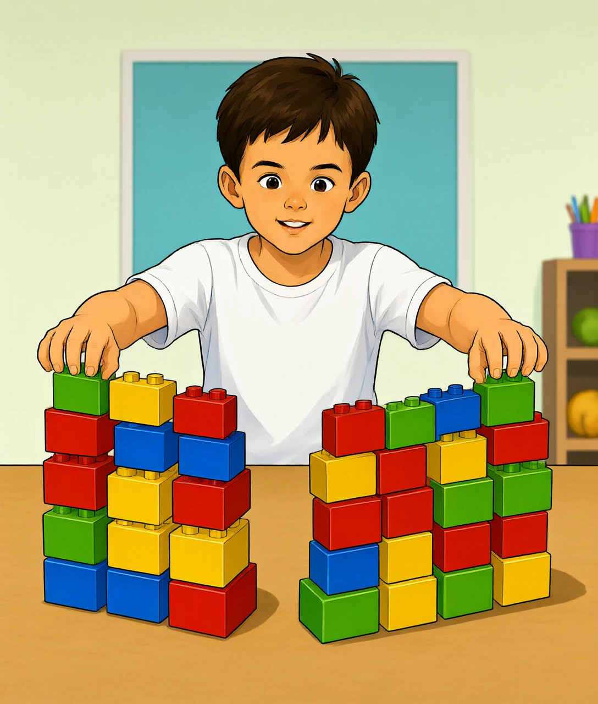
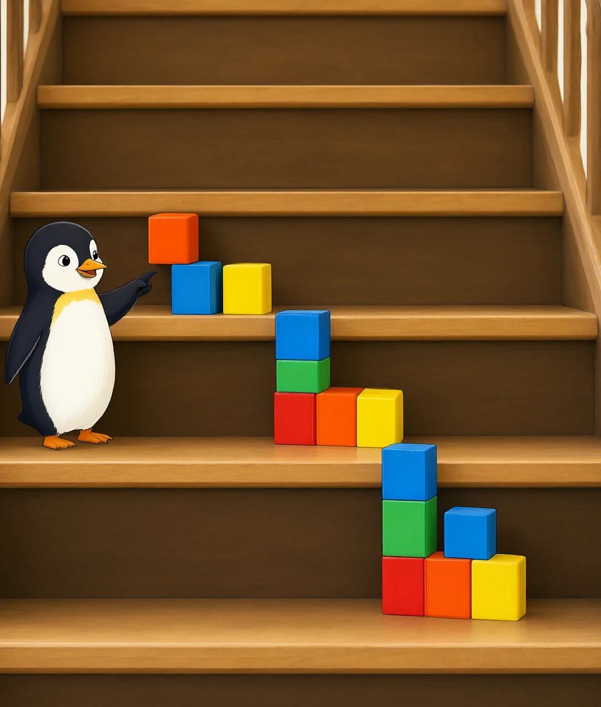

为什么数字要拆开算、错开位？——藏在作业本里的位值大魔法
老师在黑板上写下 23×4，然后你发现：竖式里的 4 并没有跟 23 整体相乘，而是先跟 3 乘，再跟 2 乘，最后还要把两行结果错开一位加起来。好麻烦！为什么不直接 23+23+23+23 呢？
问题问到点子上了。乘法本来就是「几个相同的数相加」的打包说法——23×4 就是 4 个 23。如果加 4 次还行，那 23×999 呢？加 999 次手都算断了。所以人类发明了一个更聪明的办法：把大数字拆成小零件，分开算，再合起来。竖式，就是这套流水线的操作说明书。
可是，凭什么数字可以拆开算呢？这就要请出今天真正的主角了。
「竖式」这个写法已经用了上千年级别的时间！古印度和阿拉伯的数学家在沙盘上排数字算账，传到欧洲后写在纸上，才变成今天作业本里的样子。你写的每一个竖式，都跟千年前的商人排的是同一个队形。
先看最关键的一步。竖式算 23×4 时，其实是把它拆成了两小题：3×4 和 20×4。为什么可以这么拆？
因为 23 本来就不是一颗整石头，它是 20 和 3 拼起来的。十位上的 2 意思是「2 个十」，个位上的 3 是「3 个一」。把 23 拆成 20+3 之后，分配律就上场了：
23×4 = (20+3)×4 = 20×4 + 3×4 = 80 + 12 = 92
你可以亲手验证：画 23 个小方块，每 4 个圈一堆，圈完正好 92 个；先数左边的 20 块（80 个）、再数右边的 3 块（12 个），加起来一样是 92。拆开算不会丢东西，因为拆的只是「数」的写法，不是「数」的本身。
再往下钻一层：为什么偏偏按 20 和 3 拆，而不是拆成 10 和 13？其实拆成 10 和 13 也完全合法，答案照样对。但按「位」拆有个巨大的好处——规则统一。每一位只需跟乘数乘一次，个位怎么算、十位就照抄同样的流程，不用临场发挥。规则统一，才能写成固定的竖式步骤，才能教给所有人，也才能教会计算机。

分配律的名字听起来吓人，其实你早就会用了。分苹果时你不会一口气数完，而是先分给同桌一半、再分给另一组一半——「先分发、各自算、最后汇总」，这就是分配律。竖式只是把这个动作写成了标准格式。
两位数乘两位数时，最让人迷糊的一幕来了：算 32×23，第二行是 32×2 的结果，但这一行要整体往左挪一位写。为什么？
因为那个 2 根本不是 2，它是「2 个十」，也就是 20！竖式里偷懒不写那个 0，但意思是还在的。32×20 = 640，把 640 的末尾对准十位写下去，就等于自动补上了那个 0。
这就是竖式最聪明、也最容易被忽略的设计：位置本身就是数字的一部分。一个数字站错了位，价值就翻十倍或者缩十倍——就像 5 块钱和 50 块钱，差的只是那个 0 的位置。往左挪一位，就等于悄悄乘了 10，不用真的写 0 出来，纸面干净，规则也没破坏。
再问一层为什么：为什么「对齐末位」恰好等于「乘以十」？回想酒店房间号的比喻：301 房是 3 层 1 号，310 房是 3 层 10 号——把 1 挪到十位，房间就一下子「贵」了 9 间。在十进制里，数字每往左挪一格，身价就乘 10；挪两格就乘 100。竖式正是利用这一点，让每一行的结果自动站在正确的「楼层」上，最后只需像叠积木一样对齐相加。

世界上还有人不这么写竖式！欧洲中世纪流行「格子乘法」：把数字填进斜格子，每格只放两个数的乘积，最后沿斜线相加。答案一样，只是把「拆开算」画成了格子。你如果觉得竖式错位难懂，格子法可能是更直观的替身。
竖式里最像「魔法咒语」的一步：3×4=12，个位写 2，那个 1 被「进」到了十位。这个 1 去哪了？凭什么要送走？
先别背咒语，问一个生活问题：你有 12 枚一元硬币，出门买东西想全部付掉，会不会 12 枚一个个数给收银员？不会——你会换成 1 张十元纸币加 2 枚硬币，好拿好数。满十进一，就是数字世界的换零钱打包：个位的盒子只能装 0~9，装到第 10 个就超载了，必须打包成 1 个「十」，送到十位那个更大的盒子里去。
所以进位根本不是额外的新规则，它和位值制是同一件事：每个盒子容量只有 10，超了就往上层送。再往下钻一层：为什么进位不影响其他位的答案？因为打包送走的是「整十」，十位的运算会连这份包裹一起算，一点不丢。竖式里把进位数写成小字，只是为了别忘记这笔「待送的包裹」——就像快递单上写的待发货标记。
现在回头看你二年级就学会的竖式：拆数字（位值）→ 分开算（分配律）→ 错位写（位置=乘 10）→ 进位（满十打包）。四步全是同一个世界观的产物：十进制数字是一套按位置存放的包装系统。懂了这个，竖式就不是死记的步骤，而是一台透明的机器。
如果人类长着 12 根手指，数学课可能要学「十二进制」，满十二才进一，竖式会变得完全不同！法国有些地区数数就带十二进制痕迹（80 读作「四个二十」）。所以进位规则不是宇宙真理，而是跟着我们 10 根手指长出来的。
最后说一个酷的真相：你以为竖式是「人类的老古董」，但你的平板电脑、游戏机里的芯片，做乘法时用的还是竖式的思想——只是换成了二进制。
计算机不认识 23，它只认识 0 和 1。二进制里只有两个「盒子」：满 2 就进一。芯片算乘法时，把乘数一位一位地拆开，被乘数每往左错一位就加一次——拆开、分开算、按位置错开相加，三步跟你的竖式一模一样，只是十位变成了「二位」。工程师给这套流程起了个名字叫「移位相加」，其实就是竖式的机箱版。
所以，下次你在作业本上写竖式时，可以得意地想：我和 CPU 干的是同一份工，用的是同一套千年智慧。区别只在于，它 1 秒能写几十亿次，而你一次只要写一个——但道理，你们完全相通。
① 数字按位拆开是合法的，因为位值制本来就把它拼成这样；
② 错一位=悄悄乘 10，位置本身就是数字；
③ 满十进一只是「盒子装不下就打包上送」，跟换零钱一个道理。
参考答案：B、B、B、A、C —— 全对的话，你就是真正的竖式侦探！🕵️